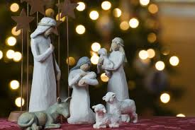

Welcome to Christmastime!
A large number of nations observe Christmas as a public holiday, and is celebrated culturally by former and non-Christians. These celebrations have a mix of Christian, pre-Christian, and secular themes. important and popular traditions of the holiday include gift-giving, carolling, and decorating one's house with lights. A figure with a number of names including Santa Claus is central to the cultural holiday, as he brings presents to good children on Christmas Eve while everyone sleeps. To accomplish this, he uses a sleigh pulled by reindeer, which flies through the air, and delivers the presents to the children in one single night.
The name Christmas is derived from Christ's Mass, as Christmas is the time when Christ was born. It is an important part of the Christian liturgical year. Jesus Christ's birth is estimated by modern historians to have been between 7th and 2nd BCE, though the month and day are unknown. The Western Christian Church put the celebration of his birth on Dec. 25th of the Gregorian Calendar. Some Eastern Christian churches follow the same date, but on the Julian Calendar, which corresponds to Jan. 7th on the Gregorian Calendar. The date was probably chosen to correspond with 9 months after Jesus' conception, or to coincide with the winter solstice, as evidenced by a biblical verse calling Jesus the, "Sun [sic] of Righteousness.